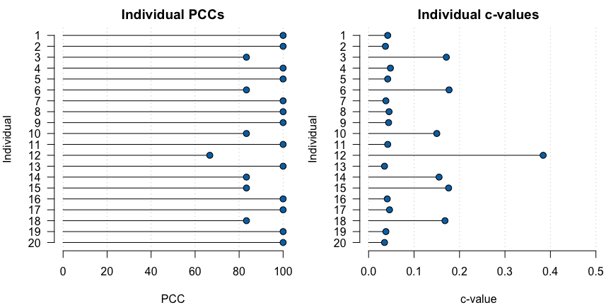
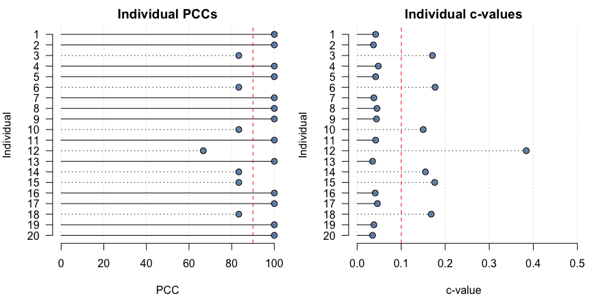

An R package for ordinal pattern analysis.
Installation
opa can be installed from CRAN with:
install.packages("opa")You can install the development version of opa from GitHub with:
# install.packages("remotes")
remotes::install_github("timbeechey/opa")Background
opa is an implementation of methods described in publications including Thorngate (1987) and Grice et al. (2015). Thorngate (1987) attributes the original idea to:
Parsons, D. (1975). The directory of tunes and musical themes. S. Brown.
How ordinal pattern analysis works
Ordinal pattern analysis is similar to Kendall’s Tau. Whereas Kendall’s tau is a measure of similarity between two data sets in terms of rank ordering, ordinal pattern analysis is intended to quantify the match between a hypothesis and patterns of individual-level data across conditions or measurement instances.
Ordinal pattern analysis works by comparing the relative ordering of pairs of observations and computing whether those pairwise relations are matched by a hypothesis. Each pairwise ordered relation is classified as an increase, a decrease, or as no change. These classifications are encoded as 1, -1 and 0, respectively. For example, a hypothesis of a monotonic increase in a response variable across four experimental conditions can be specified as:
h <- c(1, 2, 3, 4)Note that the absolute values are not important, only their relative ordering. The hypothesis h encodes six pairwise relations, all increases: 1 1 1 1 1 1.
A row of individual data representing measurements across four conditions, such as:
dat <- c(65.3, 68.8, 67.0, 73.1)encodes six ordered pairwise relations 1 1 1 -1 1 1. The percentage of orderings which are correctly classified by the hypothesis (PCC) is the main quantity of interest in ordinal pattern analysis. Comparing h and dat, the PCC is 5/6 = 0.833 or 83.3%. A hypothesis which generates a greater PCC is preferred over a hypothesis which generates a lower PCC for given data.
It is also possible to calculate a chance-value for a PCC which is equal to the chance that a PCC at least as great as the PCC of the observed data could occur as a result of a random re-ordering of the data. Chance values can be computed using either a permutation test or a randomization test.
Using opa
A hypothesized relative ordering of a response variable across conditions is specified with a numeric vector:
h <- hypothesis(c(1, 2, 4, 3), type = "pairwise")The hypothesis can be plotted with the plot_hypothesis() function:
plot(h)
Data should be in wide format with one column per measurement condition and one row per individual:
set.seed(123)
dat <- data.frame(t1 = rnorm(20, mean = 12, sd = 2),
t2 = rnorm(20, mean = 15, sd = 2),
t3 = rnorm(20, mean = 20, sd = 2),
t4 = rnorm(20, mean = 17, sd = 2))
round(dat, 2)
#> t1 t2 t3 t4
#> 1 10.88 12.86 18.61 17.76
#> 2 11.54 14.56 19.58 16.00
#> 3 15.12 12.95 17.47 16.33
#> 4 12.14 13.54 24.34 14.96
#> 5 12.26 13.75 22.42 14.86
#> 6 15.43 11.63 17.75 17.61
#> 7 12.92 16.68 19.19 17.90
#> 8 9.47 15.31 19.07 17.11
#> 9 10.63 12.72 21.56 18.84
#> 10 11.11 17.51 19.83 21.10
#> 11 14.45 15.85 20.51 16.02
#> 12 12.72 14.41 19.94 12.38
#> 13 12.80 16.79 19.91 19.01
#> 14 12.22 16.76 22.74 15.58
#> 15 10.89 16.64 19.55 15.62
#> 16 15.57 16.38 23.03 19.05
#> 17 13.00 16.11 16.90 16.43
#> 18 8.07 14.88 21.17 14.56
#> 19 13.40 14.39 20.25 17.36
#> 20 11.05 14.24 20.43 16.72An ordinal pattern analysis model of how the hypothesis h matches each individual pattern of results in dat can be fitted using:
opamod <- opa(dat, h)A summary of the model output can be viewed using:
summary(opamod)
#> Ordinal Pattern Analysis of 4 observations for 20 individuals in 1 group
#>
#> Between subjects results:
#> PCC cval
#> pooled 93.33 0
#>
#> Within subjects results:
#> PCC cval
#> 1 100.00 0.04
#> 2 100.00 0.04
#> 3 83.33 0.17
#> 4 100.00 0.05
#> 5 100.00 0.04
#> 6 83.33 0.18
#> 7 100.00 0.04
#> 8 100.00 0.04
#> 9 100.00 0.04
#> 10 83.33 0.15
#> 11 100.00 0.04
#> 12 66.67 0.38
#> 13 100.00 0.04
#> 14 83.33 0.16
#> 15 83.33 0.18
#> 16 100.00 0.04
#> 17 100.00 0.05
#> 18 83.33 0.17
#> 19 100.00 0.04
#> 20 100.00 0.04
#>
#> PCCs were calculated for pairwise ordinal relationships using a difference threshold of 0.
#> Chance-values were calculated from 1000 random orderings.Individual-level model output can be plotted using:
plot(opamod)
To aid interpretation, individual PCCs and c-values can also be plotted relative to user-specified thresholds:
plot(opamod, pcc_threshold = 90, cval_threshold = 0.1)
Pairwise comparison of measurement conditions
Pairwise comparisons of measurement conditions can be calculated by applying the compare_conditions() function to an opafit object produced by a call to opa():
condition_comparisons <- compare_conditions(opamod)
print(condition_comparisons)
#> Pairwise PCCs:
#> 1 2 3 4
#> 1 - - - -
#> 2 90 - - -
#> 3 100 100 - -
#> 4 95 80 95 -
#>
#> Pairwise chance values:
#> 1 2 3 4
#> 1 - - - -
#> 2 <0.001 - - -
#> 3 <0.001 <0.001 - -
#> 4 <0.001 0.002 <0.001 -Multiple groups
If the data consist of multiple groups a categorical grouping variable can be passed with the group keyword to produce results for each group within the data, in addition to individual results.
dat$group <- rep(c("A", "B", "C", "D"), 5)
dat$group <- factor(dat$group, levels = c("A", "B", "C", "D"))
opamod2 <- opa(dat[, 1:4], h, group = dat$group)The summary output displays results organised by group.
summary(opamod2, digits = 3)
#> Ordinal Pattern Analysis of 4 observations for 20 individuals in 4 groups
#>
#> Between subjects results:
#> PCC cval
#> A 100.000 0
#> B 86.667 0
#> C 93.333 0
#> D 93.333 0
#>
#> Within subjects results:
#> Individual PCC cval
#> A 1 100.000 0.034
#> A 5 100.000 0.035
#> A 9 100.000 0.045
#> A 13 100.000 0.044
#> A 17 100.000 0.047
#> B 2 100.000 0.053
#> B 6 83.333 0.191
#> B 10 83.333 0.165
#> B 14 83.333 0.166
#> B 18 83.333 0.159
#> C 3 83.333 0.185
#> C 7 100.000 0.044
#> C 11 100.000 0.043
#> C 15 83.333 0.158
#> C 19 100.000 0.050
#> D 4 100.000 0.055
#> D 8 100.000 0.047
#> D 12 66.667 0.379
#> D 16 100.000 0.050
#> D 20 100.000 0.044
#>
#> PCCs were calculated for pairwise ordinal relationships using a difference threshold of 0.
#> Chance-values were calculated from 1000 random orderings.Similarly, plotting the output shows individual PCCs and c-values by group.
plot(opamod2)
Comparing fit by group
The chance-value of the difference in group-level PCCs between any two groups can be calculated using the compare_groups() function.
group_comp <- compare_groups(opamod2, "A", "B")The difference in group-level PCCs along with the c-value of the difference can then be checked:
summary(group_comp)
#> ********* Group Comparison **********
#> Group 1: A
#> Group 2: B
#> Group 1 PCC: 100
#> Group 2 PCC: 86.66667
#> PCC difference: 13.33333
#> cval: 0.43Acknowledgements
Development of opa was supported by a Medical Research Foundation Fellowship (MRF-049-0004-F-BEEC-C0899).